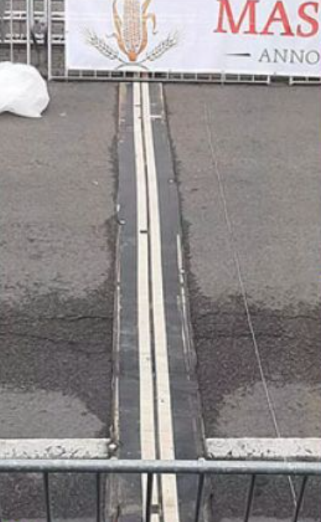
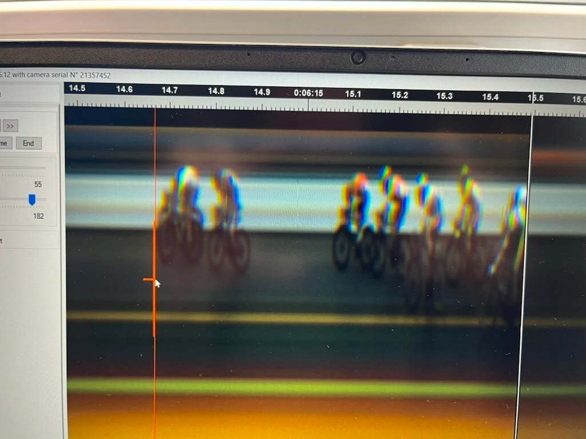
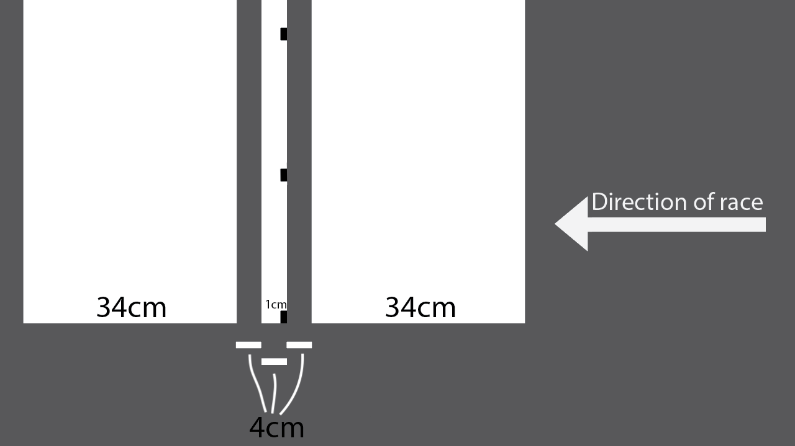

Finish Line Fiasco: UCI's Paint Job Needs a Refresh
Photo finishes are kinda my thing, so in light of Caleb Ewan's Lotto Dstny team requesting the UCI to review the result of the 2023 GP Monseré which was awarded to Gerben Thijssen of Intermarché Circus Wanty, I decided I better have a quick look at the facts of this finish. Let's make this nice and methodical!
1. The GP Monseré finish line did not conform to UCI standards.
Page 139 of the UCI specs states
THE LINE - The finish line itself must be painted in accordance with the regulations. The line is a 4 cm-wide black line on top of a white band 72 cm wide, i.e. 34 cm of white each side of the black line.
From the images, this is clearly not the case. It'd be lucky to be 30cm wide total and it's mostly black!

2. The photo finish camera is not set up in the right place.
A simple way of checking if the photo finish line camera is set up in the correct place is to compare the background of the photo finish compared to a side on view of the finish line.

I go into this in more detail in my original photo-finish blog about the 2021 Amstel Gold race finish between Wout Van Aert and Tom Pidcock, but we can immediately see the photo finish has a black background, whereas the photo finish is meant to align with the leading edge of the backmost of the two white lines (this is where the two photo finish line accuracy markers are, the two black marks just behind the center black line) so this rules out the photo finish being in the correct location (I explain the accuracy markers in my follow up post that the finish line painting needs to be reconsidered). You could argue the photo finish could be aiming directly down the ultra-thin black line in the middle of the finish but the finish line isn't even straight, so we'd expect the photo finish to veer off this line at points which would mean the background of the photo finish is both black and white - but this is not the case. That leaves us with only one option, the photo finish is either before or after the actual finish, thereby not giving a conclusive winner.
3. This leaves us with no idea of who actually won
Well at least based on the photo finish alone that is. But the other photos suggest Caleb Ewan may have crossed the line first. Seems like if the technology can't separate them, it should be considered a tie. And we all know what a tie means (or is this a long lost UCI rule too), a 1 v 1 race over 1000m to separate the winners.
4. The UCI should pick up its act, enforce its standards and actually improve its finish line specs to ensure fair finishes in the future.
In cycling, the difference between winning and losing can be razor-thin. Yet, the UCI's current finis=h line paint job is far from razor-sharp. It's baffling that the UCI has not taken a proactive approach to this issue. With millimeters often deciding the winner and glory, prizemoney and relegations on the line, the technology used to determine the winner should be foolproof. Yet, the UCI specs ensure the finish line paint markings are not specific enough to ensure accurate results.
Photo-finishes work best when the background is white, as it allows the timing staff to see the exact outline of the front wheel, due to the tyre being black. A black tire on a black background would not be easy to distinguish.
But the finish line paint stipulated in the UCI specs (page 227) gives no clear location to focus the photo-finish camera. The photo finish cannot be on the finish line. It must either be before it or after it, and there are no markings to ensure it is near to the black finish line anyway. This is why in continues to happen that photo-finish camera operators have difficulty setting up their cameras. The finish line paint is simply not compatible with accurately measuring the result.
To increase the accuracy of photo-finishes, the UCI needs to improve the specifications for how both the finish line is laid out and the photo-finished camera is mounted and focused.
5. The Lynch Finish
So I'd like to suggest an updated finish line design:
- 34cm white band
- 4cm black line
- 4cm white line (containing 1cm wide black markers)
- 4cm black line
- 34cm white band
On the central 4cm white line, the leading edge has 1cm wide markers painted on it. These are used to align the photo-finish camera and as long as all dots are contained in the photo-finish image, then we know categorically that the photo-finish was taken within 1cm of the actual finish line. Greatly reducing the risk of errors.

This takes the accuracy aspects used in athletics photo-finishes and allows it to work for cycling races where due to the higher speeds and greater number of unknowns in the courses, the painted finish line is required to be significantly wider.
If possible, the 1cm wide black markers should be reduced in width to the least amount possible while still being able to focus across the entire finish line. I understand due to the imperfections of the road surface that it may not be possible to go much smaller, and if that is the case within 1cm should be fine - at 3500 photos per second and cyclists traveling 60km/h, the difference between the finish line being 1cm earlier or later is unlikely to affect the result, as the chance of one rider overtaking another within that 1cm window is unlikely, and if it were to occur it's probable it is so close it would be classed as a tie anyway.
Implementing these suggestions would significantly reduce any risk of a repeat of Amstel Gold or De Brabantse Pijl. Professional cyclists put in huge amounts of hours and effort to be the best they can be, and it is a disservice to them to have the best quality equipment for measuring close finishes, but to then fail to measure accurately due to inadequate specs.
After my original post, ex-pro Léon van Bon said:
"It's so weird the find out the finish is not the finish".
And indeed it is. UCI it's time to fix this.
An extra little note for the UCI: In horse racing, the timing partner is contracted to provide the broadcaster with a photo-finish photo within one minute of the end of the race. I think this would also be a nice requirement to have as waiting around post race is stressful 😊